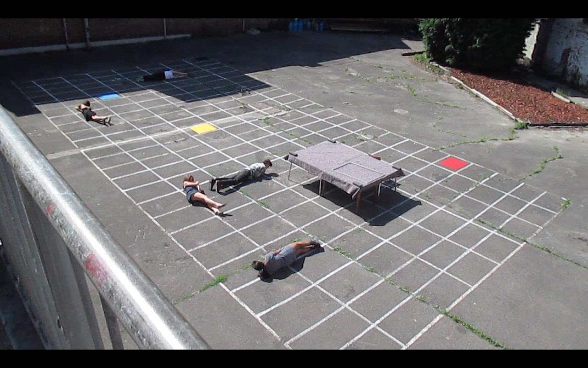
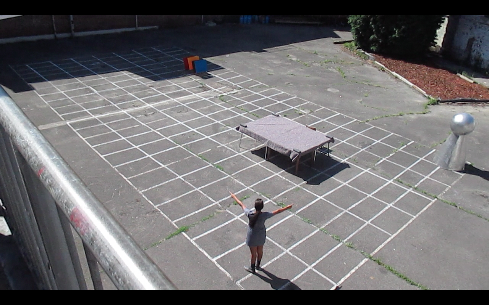
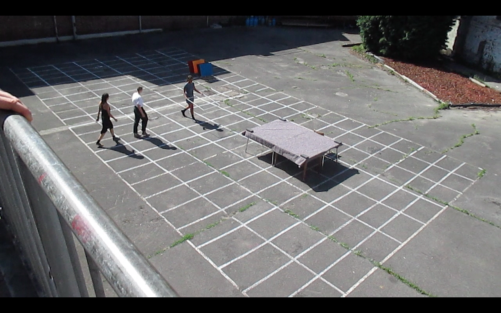
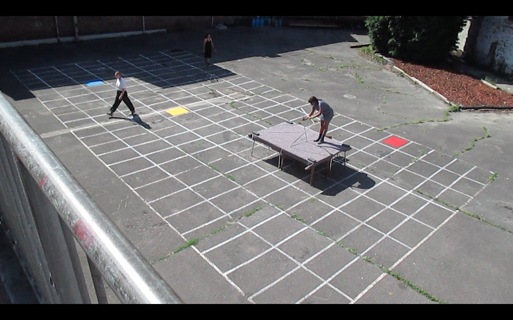

click anywhere to submerge
in video stills, studio views,
work in progress, etc...
Deveny Faruque is multimedia artist.
She mainly works with video and installation but blends web design, coding, sound, scenography, performance and sculpture in her practice. Her video work borrows a cinematographic language from the entertainment industry combined with a disruptive digital note referring to popular media. Fiction is the glue to her fragmented and essayistic approach. Her installation work is often an embodiment of that fictive world. She muses upon themes as memory, belonging, not-belonging, modern day flexibility and placelessness through slow and emerging audiovisual experiences. Using written and drawn symbols, a world where light-heartedness rules and where rules are undermined is created.
You can choose to go through all her work unselected and (❦) all at once, browse a few selected works (☍) through words, download a (✦) cv or (❝) read about her research and attempts.



